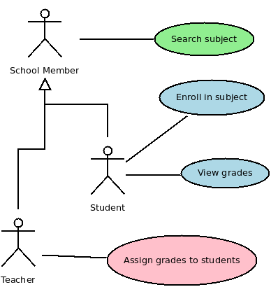

Brief Introduction to Use Cases
Use cases are a very important element in UML that addresses the functional aspect of a software. The use case diagram shows how the different system functionalities are associated to the different users in a system which are referred as actors.

The specific user kind is referred in UML as an actor. Note in the diagram above that a system can have several kinds of actors and an actor can be specialized from an existing one. For instance both Student and Teacher are specialized from School Member. This means they can also execute the same use cases from School Member which can serve to group common functionalities.
Also the objective of a use case is not just to describe a feature but to describe a business flow using a high level language that can be understood by the business expert on how a specific kind of user can achieve his goals.
For instance the “Enroll in Subject” use case can be described as follows:
====================================================
**Project:** My School System
**Subdomain:** Enrollment
**Title:** Enroll in Subject
**Description:** Describes how a subject can be enrolled to a student.
**Precondition:** student must be authenticated by the system.
**Normal Flow:**
- (n1) System lists all available subjects which were not enrolled or
completed by this student
- (n2) Student selects a subject
- (n3) System verifies if the subject is open for enrollment
- (n4) if subject is still open system enrolls student to it \[a1\]
- (n5) System sends a message to the student stating that the
enrollment was successful
**Alternative Flows:**
<u>\[a1\] Subject is not open for enrollments:</u> System sends a
message to the user stating that the subject is not open for
enrollment.
**Integrity Constraints:**
Student should not enroll in a subject he/she completed before.
==================================================== Use cases popular in the 90s and begining of 2000s almost disappeared after that and recently there has been some interest in it perhaps because software engineers have identified a need to better understand the business flow in more details than what can be found in use cases.
However use cases present many advantages such as:
Common language for engineers and domain experts - document can be the bridge between engineers and domain experts since it talks the language of the business in a structured way.
Technology independence - uses cases should not refer to specific technology in their descriptions such as web, http, button, dropdown, etc. - this way the contents continue to be useful even if those decisions change.
Enforces business flow - as described before the flow structure of use cases drive domain experts to think in a structured way and capture different situations helped also by engineers.
More details and better explanation can be found the links at the end in the References section.
However the point of this article is how to organize the software architecture and code style to reflect the business flow description provided by use cases.
Organizing Code Around Use Cases
The following practices can be taken to clearly express use cases in your code:
**
** 1) Represent each use case as a class
The use case diagram above can be translated with the following class diagram:

Each class represent a function in the system. Note that sometimes a use case may describe more than one scenario what can happen in CRUD functionalities such as Student Registration (which is not listed in our example diagram).
Note that the name of the class should match the use case.
2) Represent each use case flow step as a line of code
Code expression inside use case classes should reflect as much as possible the business flow description so to make it simpler and easier to correlate the documentation and code.
class UseCaseSubjectEnrollment
def list_subjects(student)
Subject.list_available_for_student(student) # (n1)
end
def enroll(student, subject)
if subject.available_for_enrollment? # (n3)
student.enrolls(subject) # (n4)
{ "type" => "success", "message" => "enrollment successful" } # (n5)
else
{ "type" => "failure", "message" => "failed enrollment" } # (a1)
end
end
endNote that the use case method is broken in two parts since one of the steps describes a user interaction: “Student selects a subject”. The numbers in the use case and in the code above is optional and merely to make it clear for the reader to see the relation between them.
Before the user selection with list_subjects method and after the user selection with the enroll method. Due technological restrictions in web applications (at least in Ruby web applications) the user subject selection step is not represented in the use-case class but in the application layer presentation.
Pros and Cons of Use Case Mapping to Code
After some time using this approach for some years here are the positive and negative points:
Pros:
- A change in a use case document can be easily implemented by software engineers
- Newcomers quickly understand how and where to do code modifications with little or no help
- Engineers start work from the beginning with the business goal what reduces common misunderstanding in “what” the feature of functionality should be and its goals
- Sometimes engineers can understand the business goal to the point of helping optimizing the business flow described by non-technical domain experts
Cons:
- Includes one more step before engineers start developing software
- There is a considerable effort to keep use cases updated
- Doesn’t pay off for highly dynamic and small websites where the business flow is simple and already known by engineers
In general it seems to me that the more complex a system is in term of business steps the better it is to start using use cases.
References
[1] Writing effective use cases - Alistair Cockburn - http://alistair.cockburn.us/get/2465
[2] The art of writing use cases - Rebecca Wirfs-Brock - http://www.wirfs-brock.com/PDFs/Art_of_Writing_Use_Cases.pdf
[3] Domain driven design quickly - Abel Avram - Floyd Marinescu - http://www.infoq.com/minibooks/domain-driven-design-quickly
[4] http://www.artima.com/articles/dci_vision.html - Trygve Reenskaug and James O. Coplien - The DCI Architecture: A New Vision of Object-Oriented Programming